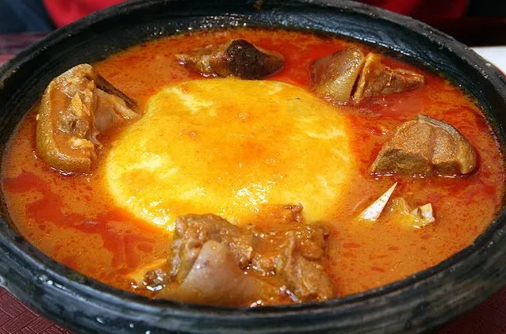

Home
Fufu Recipe

Fufu with goat meat Light Soup
Fufu is a starchy dough that takes on different forms (and names) across many West African countries. However the name 'Fufu' is most commonly associated with Ghana, specifically with the Akan ethnic group. Ghanaian Fufu is commonly made by “pounding” cassava and unripe plantains together into a paste, which is then molded by hand into a ball shape and served with a special sauce/soup. In essence it is the sauce/soup that really gives each Fufu dish its unique identity. In Ghana, the common Fufu dishes are Fufu with Light Soup, Fufu with Palm Nut Soup and Fufu with Groundnut Soup.
Ingredients:
- 1 teaspoon of peeled, fresh grated ginger (about an inch to 1 1/2 inch)
- 2-3 cloves of garlic, crushed
- 1/2 to 1 teaspoon of ground dried red chili pepper
- 1 teaspoon salt (or to taste, or substitute seasoning salt)
- 2 small bay leaves
- 1/2 cup onion, chopped
Steps:
- Put the goat meat in a soup pot and season it with the above ingredients. Stir the goat meat well, and add 1/2 cup water to the pot. Cover, bring the water to a boil, lower the heat to simmer while you prepare a second pot with:
- 4 oz of washed tomatoes, whole (1 large or 2 small-to-medium.)
- 4 oz of peeled onion (about 1 medium)
- Fresh whole red chilli peppers to taste (probably 1 to 3, depending on type and heat), tops cut off, and seeded if you like
- 4 cups of water
- Bring that water to a boil and simmer 10 or 15 minutes until the vegetables are soft, then remove grind them together (in a blender or anasanka) and return them to the water in the second pot, along with 4 more cups of water.
- Stir in 1 tablespoon of tomato paste, let it simmer a few minutes, and add the broth to the meat. Let the soup simmer until the goat meat is tender, then remove the goat meat and, for a nice clear soup, strain the broth through a sieve, into the using a spoon if necessary to help force some of the ground vegetables through the sieve (scrape the underside of the strainer with a spoon).
- Return the meat to the pot and adjust the seasonings (salt, onion, tomato, pepper, etc.) to taste. This may need to simmer for a couple of hours: goat meat tends to be tougher than beef. Add a little more water if necessary.
Note:To simplify this recipe, grind the vegetables (tomatoes, onion, pepper) at the beginning and add them to the meat pot, along with 8 cups of water. Barbara insists that the best flavor is obtained if you first allow the goat meat to simmer for 15 minutes before adding the vegetable broth.
Note: There are many variations of this recipe: you can cook some eggplant in a saucepan, then blend and add it near the end for a thicker soup; or you can add many other vegetables like okra or mushrooms, or other herbs or seasonings.
Happy Eating!